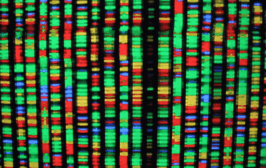
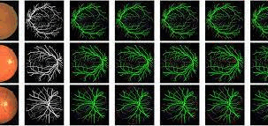
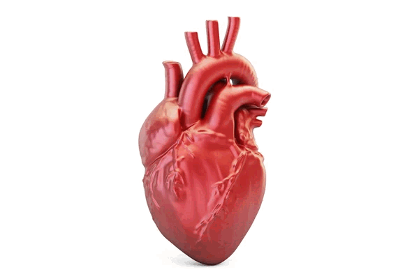
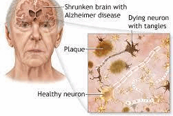
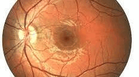
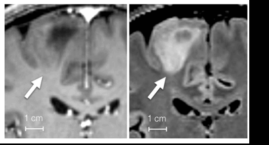
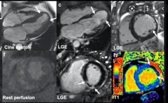
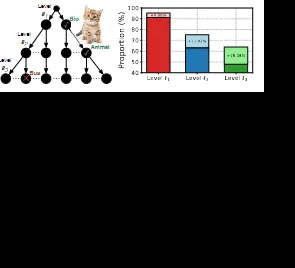
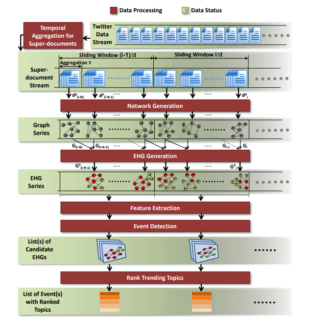

A selection of projects spanning Personalized Medicine, Medical Imaging, and Multimodal AI. We build systems that connect vision + language for clinical reasoning, spatial grounding, and robust decision support.
For the full and up-to-date list of papers, please visit my Google Scholar profile.
Below are representative research directions from our lab. Each card highlights the clinical goal, the AI task, and the type of evidence we aim to produce (localization, segmentation, reports, or reasoning).
Brain Tumor Segmentation
High-precision tumor delineation to support treatment planning and longitudinal monitoring.

Early Diagnosis with Multi-omics
Integrating heterogeneous omics signals to improve early risk prediction and patient stratification.

Early Migraine Diagnosis
Learning multimodal biomarkers to enable earlier screening and improved patient outcomes.

Heart Segmentation & Mesh Construction
Accurate cardiac structures with geometry-aware modeling for quantitative analysis and simulation.

Early Alzheimer’s Diagnosis
Imaging-driven prediction with robust evaluation and clinically meaningful interpretability.

Impact of Medication
Understanding treatment effects with longitudinal signals to support personalized care pathways.

Brain Shift Correction (Intra-operative iUS)
Improving surgical guidance by correcting deformation and aligning intra-operative signals.

Cardiac MR under Respiratory Motion
Motion-robust reconstruction and analysis for reliable cardiac quantification.
EveSense (ECIR Demo): Event Detection on Social Media
Detecting and summarizing real-world events from social streams for timely situational awareness.
Jarvis (MDM Best Demo): Voice-based Context-as-a-Service for Smart Homes
A voice-driven assistant that uses context signals for adaptive, personalized interactions.

Hierarchical Image Classification
Structured visual recognition that leverages label hierarchies for better generalization.

Event Detection on Social Media
From noisy streams to actionable signals: detection, clustering, and narrative summarization.